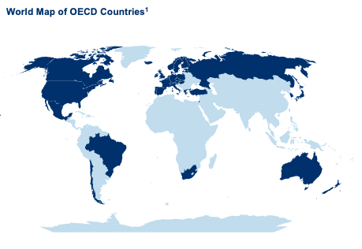

Power BI Assessment on OECD Well-Being Data
A Global Perspective on Ecomonics and Well-Being
As part of the MT412 Business Analytics Portfolio, our Power BI assessment delved into the comprehensive OECD Well-Being Dataset, presented on 21st March 2024 in Dublin, Ireland. This project aimed to leverage Power BI’s dynamic capabilities for in-depth data analysis, visual reporting, and insightful discovery into economic and well-being indicators across OECD countries. The dataset, provided by the OECD in 2017, encompasses 34 topics reflecting a wide spectrum of societal well-being, structured and cleaned for conducive analysis.
Our objective was to engage with the dataset to unearth meaningful insights and contribute to the broader discourse on societal well-being, thereby empowering policy-making processes. Through meticulous analysis, we aimed to conceptualize, organize, and prioritize our findings, presenting a comprehensive and impactful view of well-being across the globe.
Our approach involved several key steps: validating data integrity, conducting basic feature engineering, and aligning indicators with research and policy interests. We utilized Power BI’s built-in statistical functions to explore data relationships, created dashboards for multivariate analysis visualizations, and designed interactive reports to communicate our findings effectively.
The analysis dissected critical economic and well-being indicators, revealing significant correlations and insights. For instance, we found that life expectancy positively correlates with GDP per Capita and the quality of support networks, while negatively affected by the homicide rate and the availability of basic dwelling facilities. Moreover, our exploration highlighted the disparities in environmental quality, personal earnings, and life satisfaction across OECD countries, with countries like Iceland, Switzerland, and the Nordic nations standing out for their high life satisfaction scores.
Our Power BI assessment underscored the profound impact of economic indicators, quality of life, employment, and education on societal well-being. We discovered impactful correlations, such as the positive relationship between personal earnings and factors like rooms per person, water quality, safety, and overall life satisfaction. These findings illustrate the significant role of a country’s economic status in shaping its citizens' well-being.
This comprehensive narrative provides a formal and structured overview of your Power BI assessment on OECD Well-Being Data, suitable for inclusion in a professional data analytics portfolio. Our presentation was complemented by interactive dashboards that provided a detailed overview of key economic indicators, employment and education trends, quality of life metrics, and insightful correlations within OECD countries. These dashboards allow for an immersive exploration of the data, facilitating a deeper understanding of the intricate relationships between different well-being factors.
This Power BI assessment has been a profound journey into the heart of societal well-being data, offering a global perspective on the economics of happiness and prosperity. By harnessing the power of data analytics, we have been able to contribute to the ongoing dialogue on well-being and provide valuable insights for policy-making. Our findings underscore the necessity of data-driven decision-making in shaping a better world for all.
Power BI Dashboards on OECD Well-Being Data
The slides provide a comprehensive look into the interactive dashboards developed as part of our Power BI assessment, showcasing the depth of our analysis on the OECD Well-Being Data. Each dashboard view is designed to offer insightful explorations of the dataset, emphasizing economic indicators, employment and education statistics, quality of life metrics, and the correlations between these factors. Through interactive visualizations, these dashboards serve as critical tools for understanding and communicating the complex relationships inherent in the data.
Dashboard View 1: Overview of OECD Economic Indicators
This dashboard provides a map visualization of OECD countries, with bubble sizes representing key metrics like GDP and population, offering an interactive overview of economic standings across member countries.
Dashboard View 2: Comparative Economic Indicators
Featuring aggregated data and bar chart visualizations, this view facilitates a comprehensive comparison of economic indicators across OECD countries, enhancing data interaction and comparative analysis.
Dashboard View 3: Employment and Education Statistics
Juxtaposing employment earnings against education levels, this dashboard uses interactive features and descending bar charts to highlight trends and insights into the educational and employment contexts of OECD countries.
Dashboard View 4: Quality of Life Indicators
Focusing on comprehensive quality of life metrics, this dashboard visualizes various indicators for OECD countries, with interactive elements allowing users to filter and compare data intuitively.
Dashboard View 5: Correlation Analysis of Life Quality Indicators
Offering a detailed cross-analysis, this view explores the correlations between life quality indicators and factors like personal earnings and life expectancy, highlighting the nuanced relationships within the dataset.
These appendices encapsulate the depth and breadth of our Power BI assessment, illustrating the rich insights and detailed analysis enabled by interactive data visualization on the well-being and economic indicators of OECD countries.